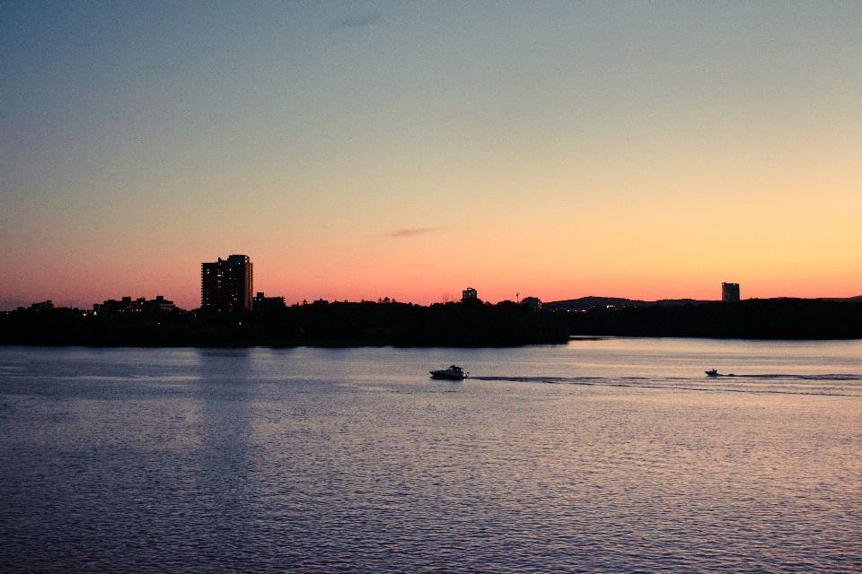
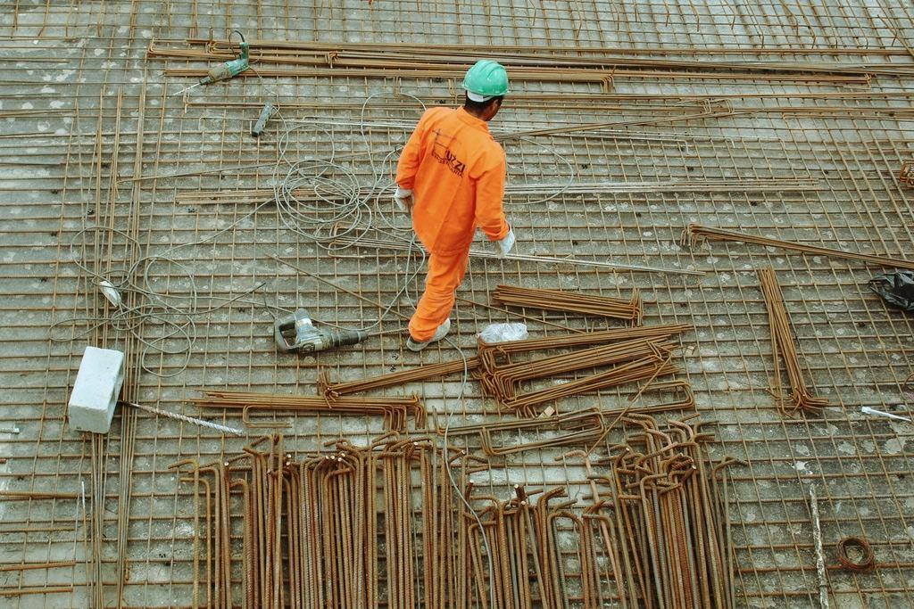
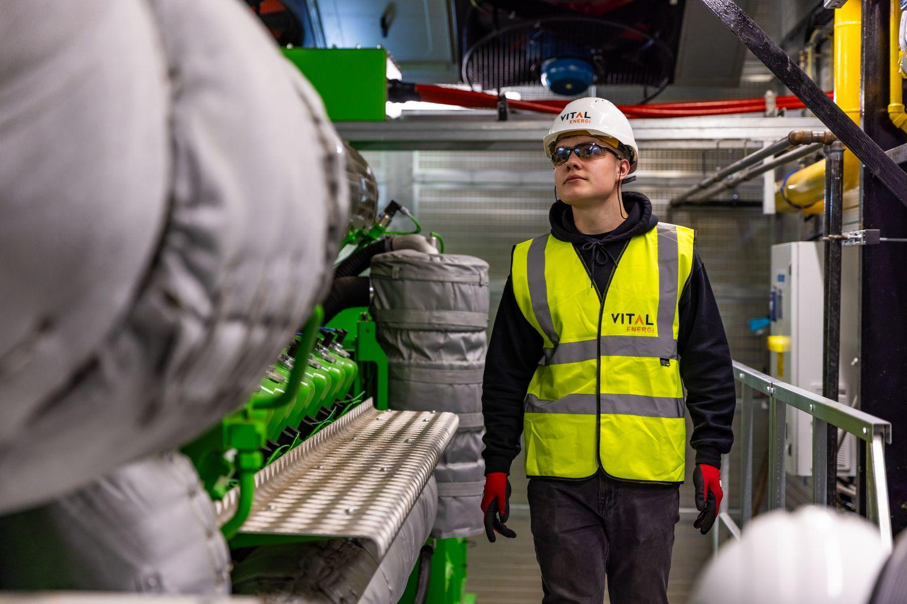
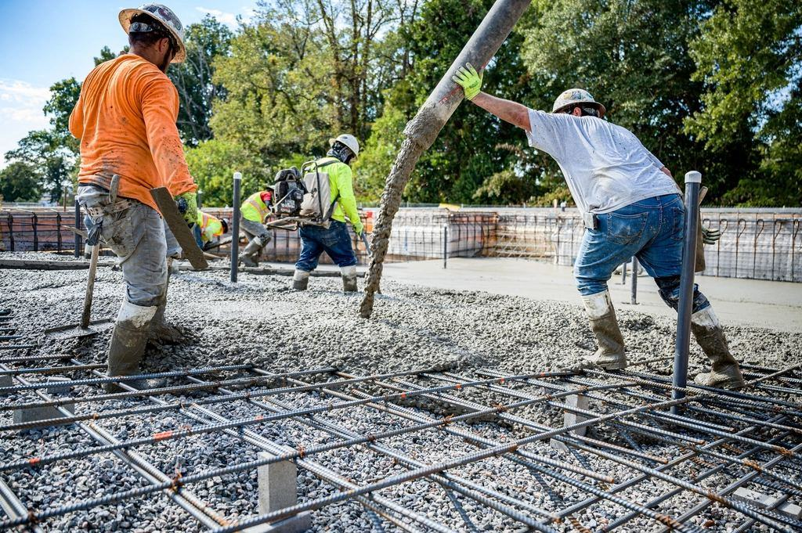
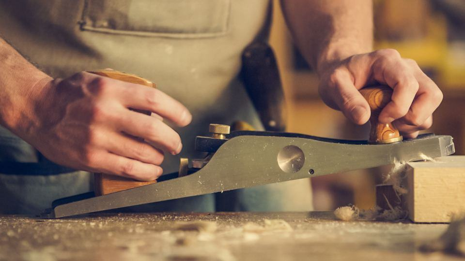
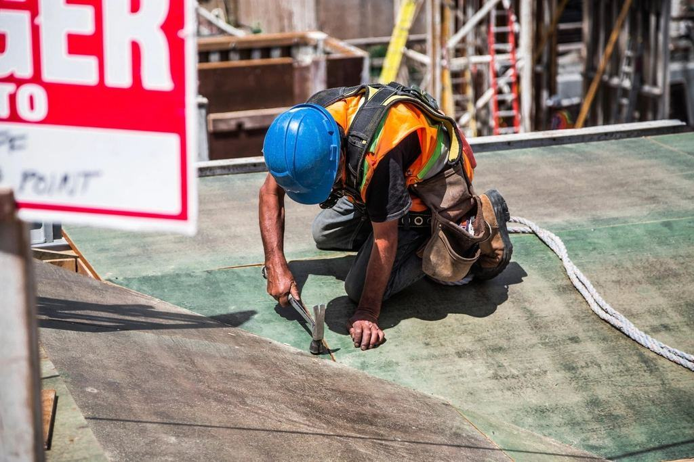
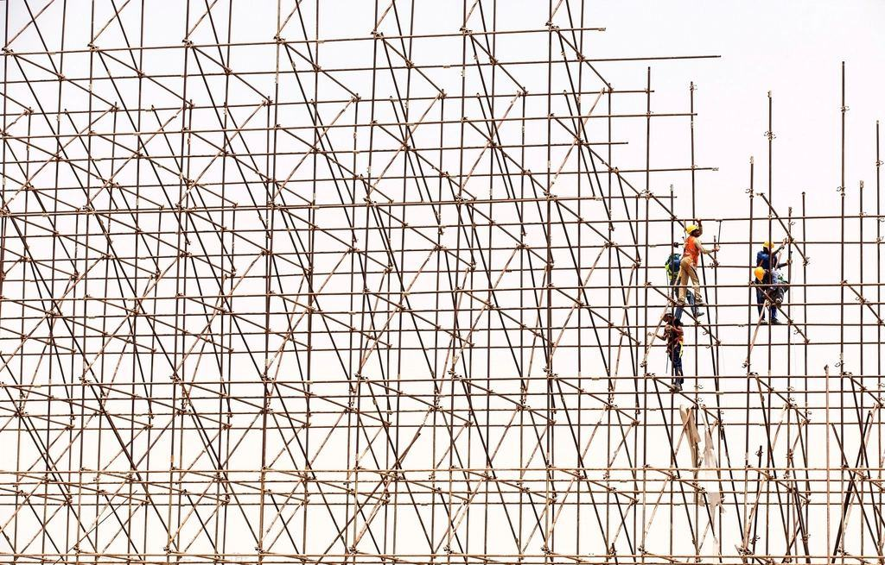

Betong som bär, i hela Halland
- Pågående

Kv. Tegelbruket
64 hyreslägenheter i åtta våningar med platsgjutna väggar och bjälklag.
- Pågående

P-huset Stationen
Vattenbilning och kloridskydd på fyra plan, med huset öppet för pendlare.
- Färdigt

Brf Kustpilen
112 balkonger med nya kantbalkar, tätskikt och glasräcken på ett 1968-hus.
- Färdigt

Lagerplatta Kristinehed
9 200 kvm slipat golv för en logistikkund, gjutet i sju nattskift.
- Färdigt

Kv. Strandängen
Garage i två plan under 48 bostadsrätter, med vattentät betong under havsnivå.
- Färdigt

Simhallen i Laholm
Bassängkonstruktion och platta för kommunens nya simhall med 25-metersbassäng.
Våra avdelningar
 Stomme
StommeFyrtio formsättare och sju kranar
Avdelningen bygger stommar åt byggherrar och totalentreprenörer i Halland och Göteborgs södra kranskommuner.
Läs mer Grund & mark
Grund & markAllt under nollplanet
Ett lag på tolv personer med egna grävmaskiner och pumpbil som gör grunder från villaplattor till parkeringsgarage i två plan.
Läs mer Betongrenovering
BetongrenoveringVi lagar det andra gjöt
Utredare, vattenbilare och betongarbetare som renoverar balkonger, loftgångar och parkeringshus åt fastighetsägare och bostadsrättsföreningar.
Läs mer
Golv & industriPlant nog för höglager
Golvlaget arbetar med laseravdragning, stålglättning och slipning, oftast på nattskift när betongen får rätt härdning.
Läs mer
Vad ska gjutas?

”En stomme förlåter ingenting. Blir det fel i formen får hyresgästen leva med det i hundra år, så vi gör om hellre än att gjuta på.”

Här blir du betongarbetare på riktigt
Vi tar in sex lärlingar per år från byggprogrammet i Halmstad och Varberg. Efter tre år kan du formsätta, armera och leda en gjutning.
Varje fredag klockan tre går alla arbetsplatser igenom veckans säkerhetsobservationer – sedan är det helg.
Från anbud till härdningslogg
- 1

Anbud på handlingar
Vi räknar på förfrågningsunderlag inom två veckor och föreslår alternativ som kortar tiden eller sänker klimatpåverkan.
- 2

Gjutplan och recept
Tillsammans med betongleverantören tar vi fram recept och gjutordning efter årstid och härdningskrav.
- 3

Produktion i takt
Formsättning, armering och gjutning i fast cykel, med temperaturgivare i varje gjutning för att följa hållfastheten.
- 4

Överlämning med mätdata
Du får härdningsloggar, planhetsmätning och egenkontroller digitalt när stommen lämnas över.
Byggherrar och föreningar om oss
”Stommen i Tegelbruket var klar tre veckor före tidplan, och mätprotokollen kom samma dag som vi bad om dem.”
Gunilla S. · Brf Kustpilen, Varberg”Vi bodde kvar under hela balkongrenoveringen. Varje trappuppgång fick ett datumschema och det höll.”
Andreas K. · Kristinehed, Halmstad”Planheten på golvet var bättre än kravet för våra höglager. Inga slipningar i efterhand.”
På våra gjutplatser nu

Sista bjälklaget i kv. Tegelbruket
Våning åtta göts den 3 november. 64 lägenheter i Halmstad står nu i full höjd, tre veckor före tidplan.
Läs mer
P-huset vid stationen i Falkenberg
Etapp två av fyra är klar. 3 400 kvm däck har vattenbilats och fått nytt kloridskydd.
Läs mer
Ny betong med 40 procent lägre utsläpp
Från januari är vår standardbetong för bjälklag ett slaggrecept som provats i två projekt under 2026.
Läs mer
Mindre cement i varje kubikmeter
Cementen står för den största delen av en stommes klimatpåverkan. Vi beställer klimatförbättrade recept som standard, återanvänder formvirke i fem till sju cykler och mäter härdningen så att vi inte överdimensionerar.
- –40 %CO₂ per m³ i bjälklagsbetong till 2027
- 7cykler för varje formskiva i snitt
- 0allvarliga olyckor sedan 2019

Skicka ditt underlag
Bifoga ritningar eller beskriv projektet, så kontaktar en kalkylator dig inom två arbetsdagar.
- Telefon
- 070-174 06 11
- E-post
- anbud@hallandsstomme.se
- Öppettider
- Kontoret mån–fre 7–16